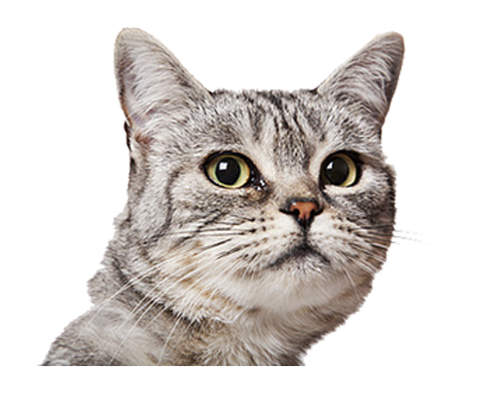
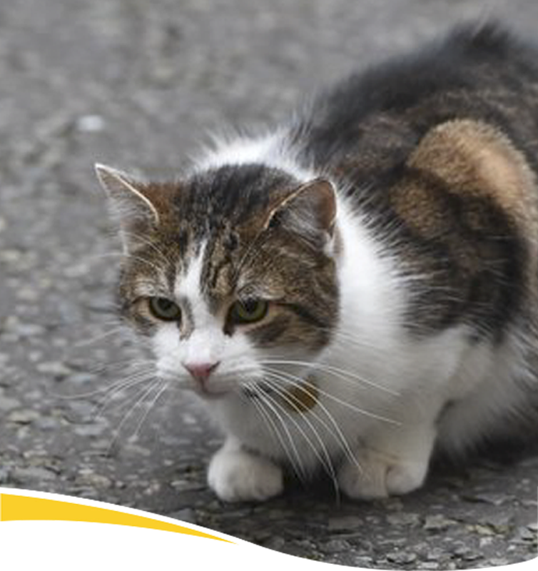

유의 사항
식료품 상품은 유통기한 내에 먹이지 않거나 개봉한 상태로 장시간 두면 변질 될 수 있으니
유의해 주시길 바랍니다. 핫팩은 고양이 피부에 직접 닿을 시 저온화상을 입을 수 있으니 얇은 천
혹은 종이를 덧대어서 사용하시길 바랍니다.
상품 설명
고양이를 키우고 싶으신데 여건이 되지 않는 분, 길고양이와 우정을 쌓고 싶으신 분,
굶어 죽거나 추워 죽는 고양이에게 따뜻한 보금자리를 안겨 주시고 싶은 분을 위해 일주일안에
고양이를 주인님으로 모실 수 있는 패키지를 제작했습니다.
고양이를 키우고 싶은데
키우지 못하는 환경이라고요?


길고양이 케어 세트와 함께
길고양이를 키워보는 것은 어떨까요?

한 해 버려지는 고양이 2~3만 마리
길고양이 평균 수명은 고작 3년
특히 겨울은
낮은 온도, 얼어붙은 먹이, 수분 부족
등의 이유로 길고양이가
가장 많이 죽는 계절입니다.
이제 길고양이 케어 세트로
길고양이에게 도움의 손길을 내어 주세요.


팬시피스트 주식 캔 6회분 / 팬시피스트 퓨레 키스 4회분 /
위 베어 베어스 핫팩 / 방석
팬시피스트 주식캔 6회분
치킨 앤 튜나, 참치 앤 튜나 총 두가지 맛으로 질리지 않게!
명품 브랜드 팬시 피스트 사의 제품으로 더 건강하고 맛있게!
한손에 들어오는 휴대성으로 언제 어디서나
고양이에게 맛있는 밥을 선물해 줄 수 있습니다.
팬시피스트 퓨레 키스 4회분
고양이들이 아주 좋아하는 간식 신선한 참치와
닭가슴살 플레이크로 만든 팬시피스트 사의 퓨레 키스는 4회분이
개별 포장 되어있어 휴대하기도 매우 좋은 상품입니다.
핫팩
추운 날씨에 취약한 고양이들을 위해 따뜻한 핫팩을!
15시간 지속시간으로 더욱 오랫동안 따뜻하게!
방석
가볍고 포근한 느낌을 주는 방석으로 경량이기 때문에
부담없이 들고 다닐 수 있습니다. 또한 끝부분에 있는 고리로
의자, 나뭇가지 등에 고정시키기도 유용합니다.


1. 집 주변에서 고양이를 자주 만나는 곳을 찾습니다.

2. 방석을 박스 혹은 집 안에 넣고 핫팩을 올려 따뜻하게 해줍니다.
그 위에 담요 혹은 종이를 두어 핫팩에 의해 저온화상을 입지 않게 해줍니다.
그리고 경계하는 고양이에게 맛있는 간식을 줍니다.
경계심이 심할 경우 땅에 그냥 뿌려주신 후 멀리서 지켜보시면 됩니다.

3. 매일 혹은 격일간 꾸준히 밥을 챙겨 주고 중간중간 간식을 줍니다.